Figures
Here you should include all of your figures and links to the pages that they have been used in. 
Planning - Process
Figure 2: Given design goals. To be found in Planning - Process - Design goals.
Figure 3: Additional design goals. To be found in Planning - Process - Future residents . 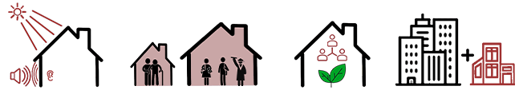
Figure 4: Future residents. To be found in Planning - Process - Future residents . 
Figure 5: Given building plot. To be found in Planning - Process - Analysis on the Site.
Figure 6: Surrounding environment. To be found in Planning - Process - Building visualisation. 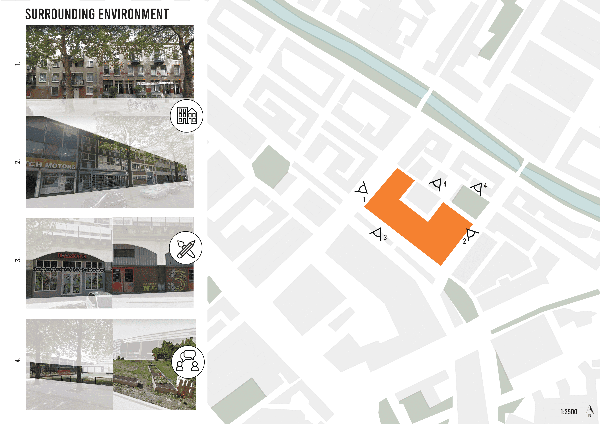
Figure 7: Building visualisation. To be found in Planning - Process - Building visualisation. 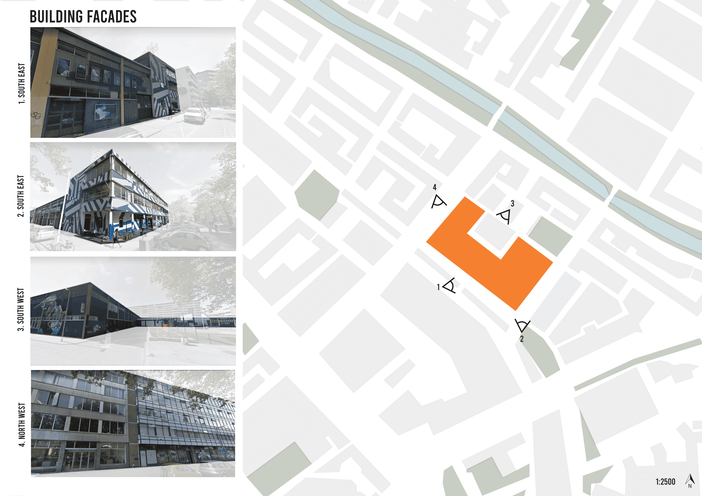
Figure 8: Access routes to the site. To be found in Planning - Process - Access routes.
Figure 9: Building heights in the environment. To be found in Planning - Process - Building heights in the environment.
Figure 10: Sizes of the functions. To be found in Planning - Process - Functions size.
Figure 11: Sizes of the functions (extensive). To be found in Planning - Process - Functional requirements.
Figure 12: Distribution of facilities throughout the entire building. To be found in Planning - Process - Functional requirements. 
Figure 13: Distribution of facilities per storey. To be found in Planning - Process - Functional requirements. 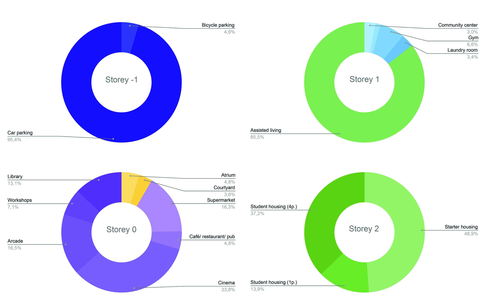
Figure 14: Noise table. To be found in Planning - Process - Noise table.
Figure 15: Noise chart. To be found in Planning - Process - Noise chart. 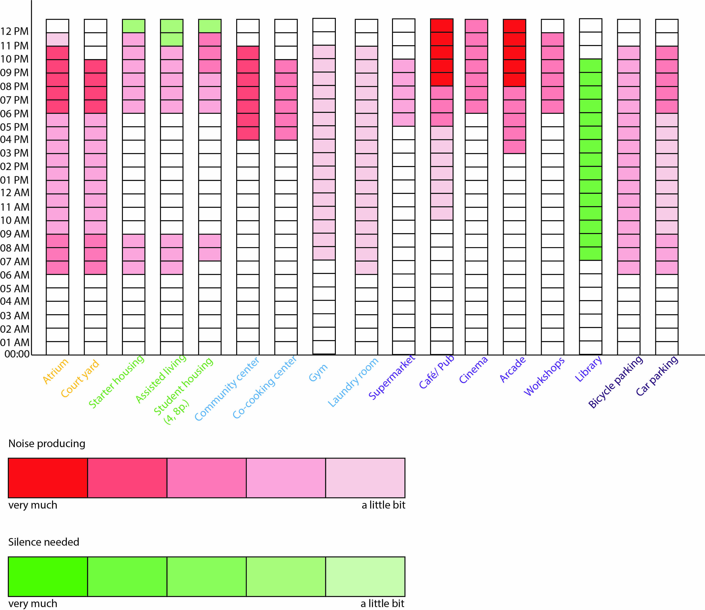
Planning - Products
Figure 16: Bubble Diagram. To be found in Planning - Products - Bubble diagram. 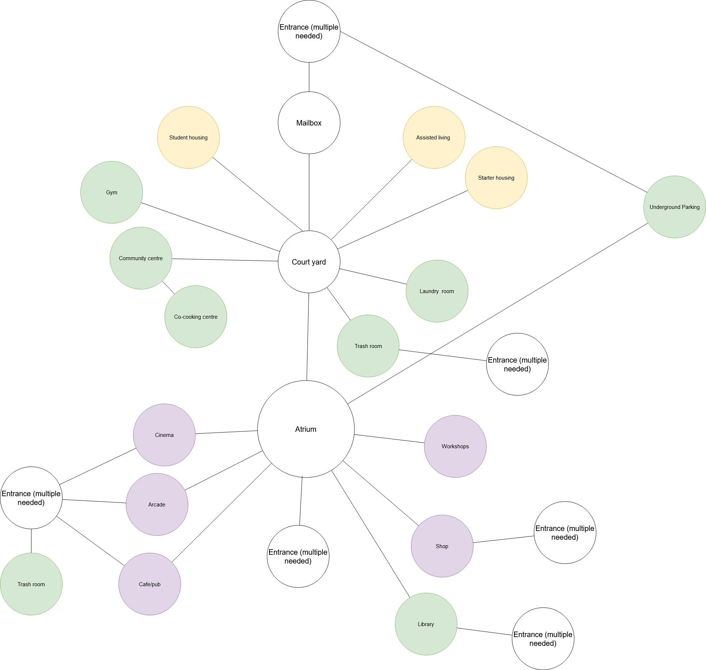
Figure 17: Metronetwerk. To be found in Planning - Products - Metronetwerk.
Figure 18: Resident stories. To be found in Planning - Products - Resident stories.
Figure 19: Matrix. To be found in Planning - Products - Matrix.
Figure 20: Fundamental flowchart. To be found in Planning - Products - Flowchart (summary). 
Configuring - Process
Figure 21: Stair three and five. To be found in Configuring - Process - Voxel size - decision making.
Configuring - Product
Figure 22: Voxel amount per function. To be found in Configuring - Product - Voxel amount for each function.
Notebook 1 - Voxelization
Figure 23: Flowchart - Voxelization. To be found in Configuring - Notebook 1 - Flowchart.
Figure 24: Gif - Voxel. To be found in Configuring - Notebook 1 - Visualisations of the result. 
Figure 25: Voxelized model (14,4 x 14,4m). To be found in Configuring - Notebook 1 - Visualisations of the result.
Notebook 2 - Solar envelope
Figure 26: Flowchart - Solar envelope. To be found in Massing - Notebook 2 - Flowchart.
Figure 27: Visualisation of the process. To be found in Massing - Notebook 2 - additional diagrams.
Figure 28: Visualisation of the grouping of the voxels. To be found in Massing - Notebook 2 - additional diagrams.
Figure 29: Gif - Solar envelope. To be found in Massing - Notebook 2 - Visualisations of the result. 
Figure 30: Solar envelope - size 14,4. To be found in Massing - Notebook 2 - Visualisations of the result.
Figure 31: Selection 1. To be found in Massing - Notebook 2 - additional diagrams.
Figure 32: Selection 1 + voxels in size 7,2. To be found in Massing - Notebook 2 - Visualisations of the result.
Figure 33: Selection 2. To be found in Massing - Notebook 2 - Visualisations of the result.
Figure 34: Selection 2 + voxels in size 3,6. To be found in Massing - Notebook 2 - Visualisations of the result.
Figure 35: Final result. To be found in Massing - Notebook 2 - Visualisations of the result.
Notebook 3 - Combine data
Figure 36: Flowchart - Combine data. To be found in Massing - Notebook 3 - Flowchart.
Figure 37: Final result - Combine data. To be found in Massing - Notebook 3 - Visualisations of the result.
Notebook 4 - Solar outside
Figure 38: Flowchart - Solar outsite. To be found in Massing - Notebook 4 - Flowchart. 
Figure 39: Solar outside principle. To be found in Massing - Notebook 4 - Additional diagrams.
Notebook 5 - Sound
Figure 40: Flowchart - Sound. To be found in Massing - Notebook 5 - Flowchart.
Figure 41: Grasshopper file I. To be found in Massing - Notebook 5 - Additional diagrams.
Figure 42: Grasshopper file II. To be found in Massing - Notebook 5 - Additional diagrams.
Figure 43: Established radius. To be found in Massing - Notebook 5 - Additional diagrams.
Figure 44: Measuring the distances. To be found in Massing - Notebook 5 - Additional diagrams.
Figure 45: Gif - Sound. To be found in Massing - Notebook 5 - Visualisations of the result. 
Figure 46: End result - Sound calculation. To be found in Massing - Notebook 5 - Visualisations of the result.
Notebook 6 - Scale sound
Figure 47: Flowchart - Scale sound. To be found in Massing - Notebook 6 - Flowchart.
Notebook 7- Roof access
Figure 48: Flowchart - Roof access. To be found in Massing - Notebook 7 - Flowchart.
Figure 49: Roof access principle. To be found in Massing - Notebook 7 - Additional diagrams. 
Figure 50: Gif - Roof access. To be found in Massing - Notebook 11 - Visualisations of the result. 
Figure 51: End result - Roof access. To be found in Massing - Notebook 7 - Voxelcloud.
Notebook 9 - Generative Relations mcda
Figure 52: CSV - Matrix. To be found in Massing - Notebook 9.
Figure 53: Entrance sketch. To be found in Massing - Notebook 9. 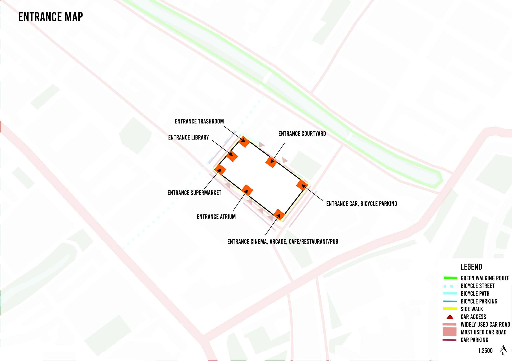
Figure 54: Flowchart - Generative Relations mcda. To be found in Massing - Notebook 9 - Flowchart. 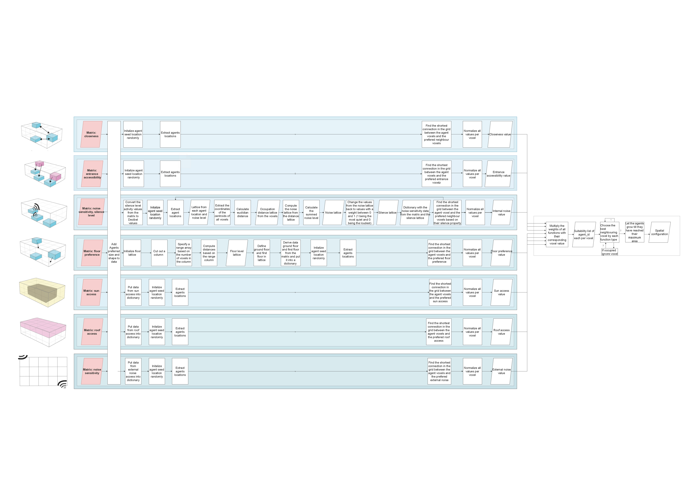
Figure 55: Closeness. To be found in [Massing - Notebook 9 - Additional diagrams]https://miloumulder.github.io/spatial_computing_project_template/a4.2_Notebook9/).
Figure 56: Entrances. To be found in Massing - Notebook 9 - Additional diagrams.
Figure 57: Floor preference. To be found in Massing - Notebook 9 - Additional diagrams.
Figure 58: Internal noise. To be found in Massing - Notebook 9 - Additional diagrams.
Figure 59: External noise. To be found in Massing - Notebook 9 - Additional diagrams.
Figure 60: Sun access. To be found in Massing - Notebook 9 - Additional diagrams.
Figure 61: Roof access. To be found in Massing - Notebook 9 - Additional diagrams.
Figure 62: Gif - Growing. To be found in Massing - Notebook 9 - Visualisations of the result.
Figure 63: Visualisation Generative Relations mcda. To be found in Massing - Notebook 9 - Visualisations of the result.
Notebook 11 - Prepare for revit pipeline
Figure 64: Grasshopper file - generation of floors. To be found in Massing - Notebook 11 - Additional diagrams.
Figure 65: Grasshopper file - generation of walls. To be found in Massing - Notebook 11 - Additional diagrams.
Figure 66: Grasshopper file - generation of windows. To be found in Massing - Notebook 11 - Additional diagrams.
Figure 67: Walls and floors generated in revit. To be found in Massing - Notebook 11 - Additional diagrams.
Figure 68: Gif - Revit Pipeline. To be found in Massing - Notebook 11 - Visualisations of the result.
Figure 69: End result Rhino.Inside. To be found in Massing - Notebook 11 - Visualisations of the result.
Notebook 12 - Generative Relations corridors
Figure 70: Flowchart - Corridors. To be found in Massing - Notebook 12 - Flowchart.
Figure 71: Metronetwok - shafts. To be found in Massing - Notebook 12 - Additional diagrams.
Figure 72: Diagrams - Shafts. To be found in Massing - Notebook 12 - Additional diagrams. 
Figure 73: gif - corridors. To be found in Massing - Notebook 12 - Visualisations of the result.
Figure 74: End result - corridors. To be found in Massing - Notebook 12 - Visualisations of the result.
Results
Figure 75: Floorplan - Starters I. To be found in Massing - Results - Floorplan - residences.
Figure 76: Floorplan - Starters II. To be found in Massing - Results - Floorplan - residences.
Figure 77: Floorplan - Assisted Living I. To be found in Massing - Results - Floorplan - residences.
Figure 78: Floorplan - Assisted Living II. To be found in Massing - Results - Floorplan - residences.
Figure 79: Floorplan - Stuio I. To be found in Massing - Results - Floorplan - residences.
Figure 80: Floorplan Stuio II- . To be found in Massing - Results - Floorplan - residences.
Figure 81: Floorplan - Student I. To be found in Massing - Results - Floorplan - residences.
Figure 82: Floorplan - Student II. To be found in Massing - Results - Floorplan - residences.
Figure 83: Floorplan - Cinema big. To be found in Massing - Results - Floorplans - stencils.
Figure 84: Floorplan - Cinema small. To be found in Massing - Results - Floorplans - stencils.
Figure 85: Stencils - Cinema. To be found in Massing - Results - Floorplans - stencils. 
Figure 86: Stencils - Arcade. To be found in Massing - Results - Floorplans - stencils. 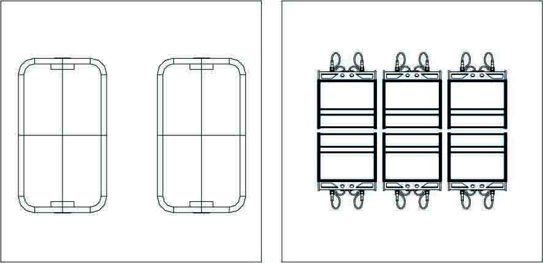
Figure 87: Stencils - Library. To be found in Massing - Results - Floorplans - stencils. 
Figure 88: Stencils - Supermarket. To be found in Massing - Results - Floorplans - stencils. 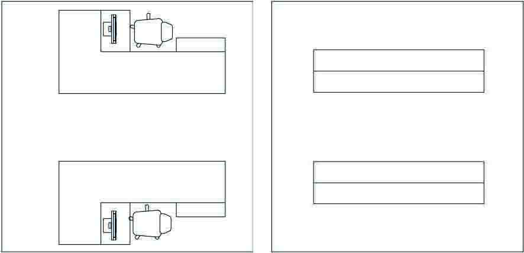
Figure 89: Stencil - Parking garage. To be found in Massing - Results - Floorplans - stencils. 
Figure 90: Stencil - Bicycle parking. To be found in Massing - Results - Floorplans - stencils.
Figure 91: Floorplan - Ground floor. To be found in Massing - Results - Floorplans - total floors. 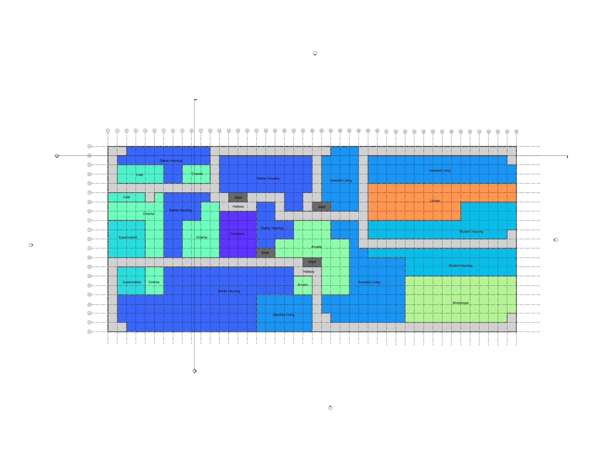
Figure 92: Floorplan - first floor. To be found in Massing - Results - Floorplans - total floors. 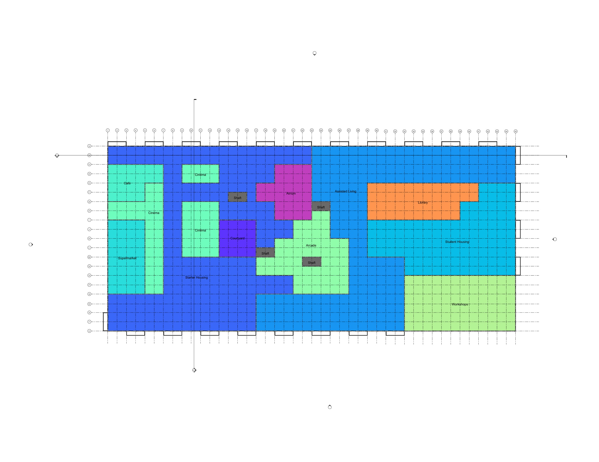
Figure 93: Floorplan - second floor. To be found in Massing - Results - Floorplans - total floors. 
Figure 94: Floorplan - third floor. To be found in Massing - Results - Floorplans - total floors. 
Figure 95: Floorplan - fourth floor. To be found in Massing - Results - Floorplans - total floors. 
Figure 96: Floorplan - fifth floor. To be found in Massing - Results - Floorplans - total floors. 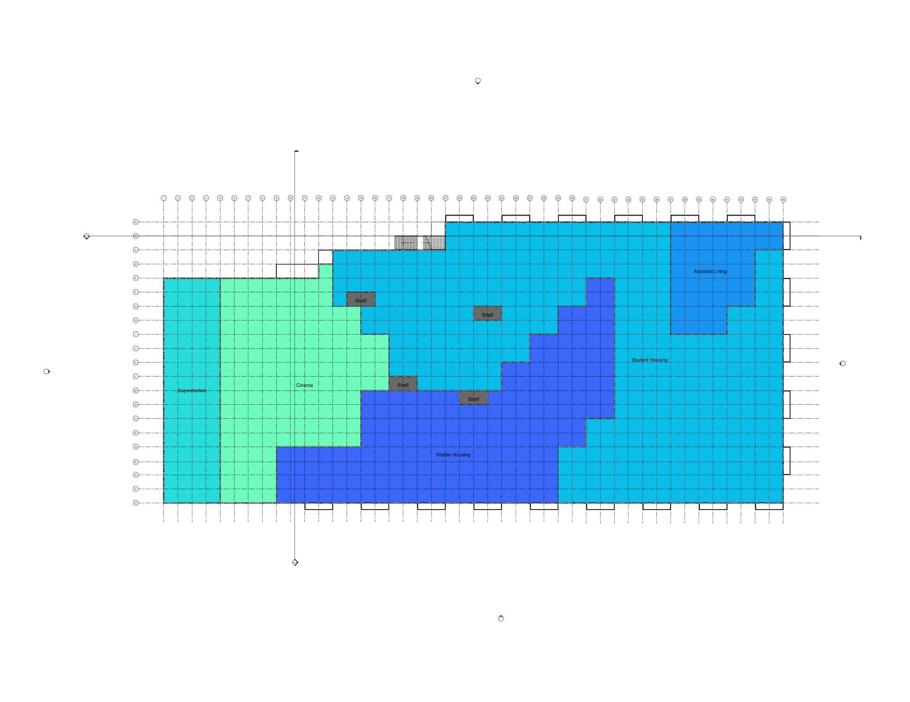
Figure 97: Floorplan - sixth floor. To be found in Massing - Results - Floorplans - total floors. 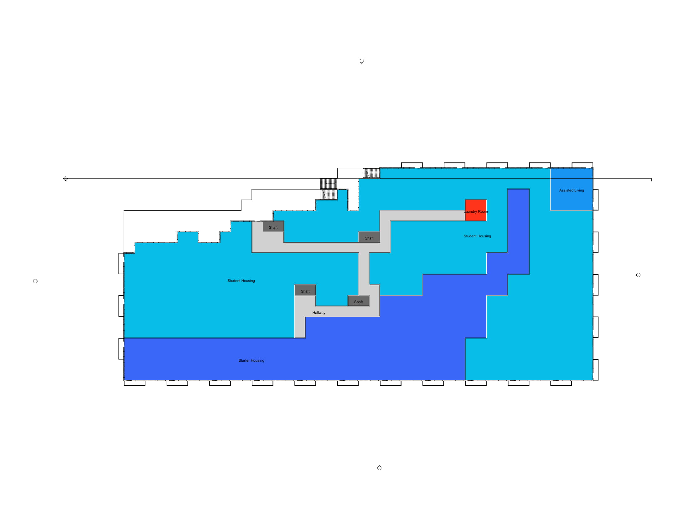
Figure 98: Floorplan - seventh floor. To be found in Massing - Results - Floorplans - total floors. 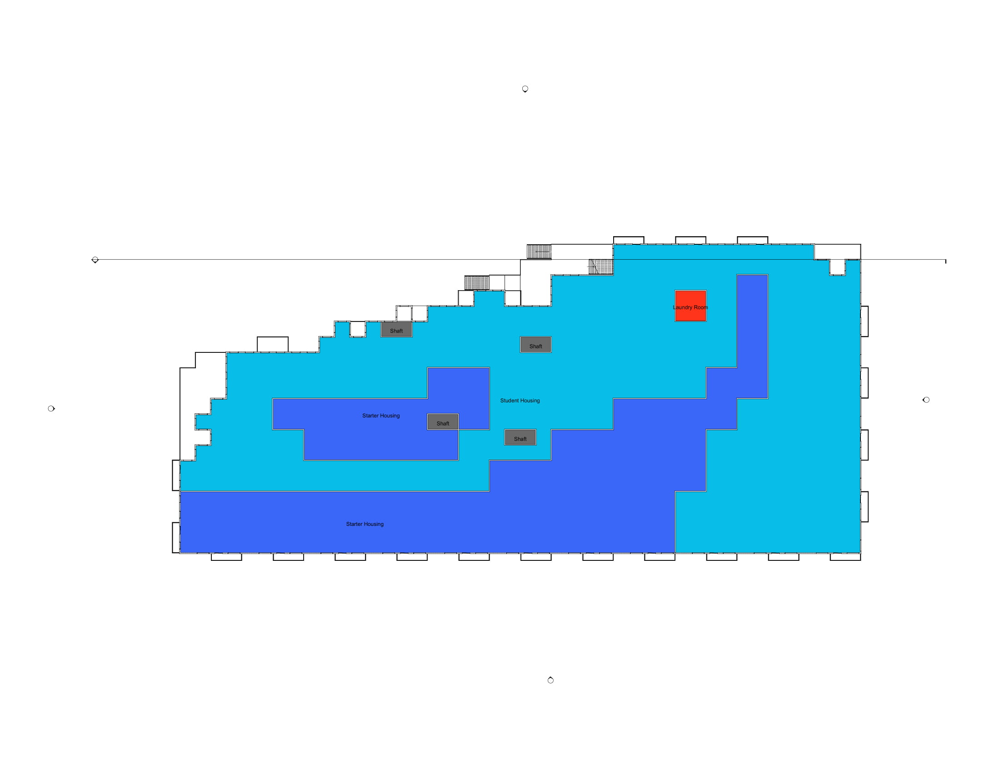
Figure 99: Floorplan - eighth floor. To be found in Massing - Results - Floorplans - total floors. 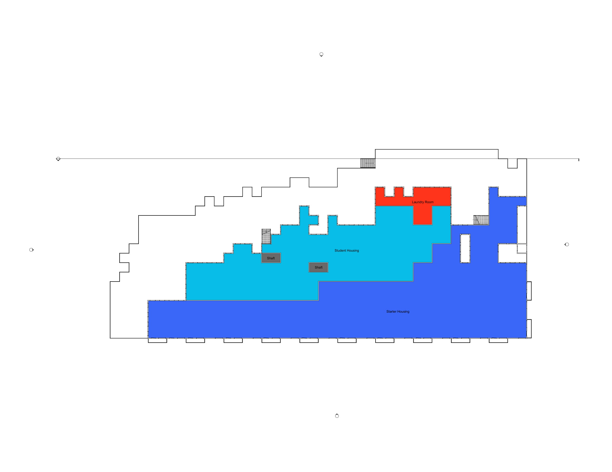
Figure 100: Floorplan - ninth floor. To be found in Massing - Results - Floorplans - total floors. 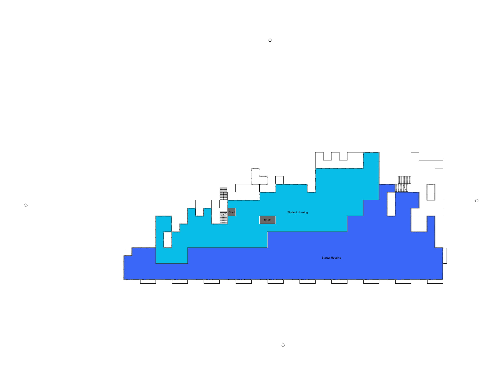
Figure 101: Floorplan - tenth floor. To be found in Massing - Results - Floorplans - total floors. 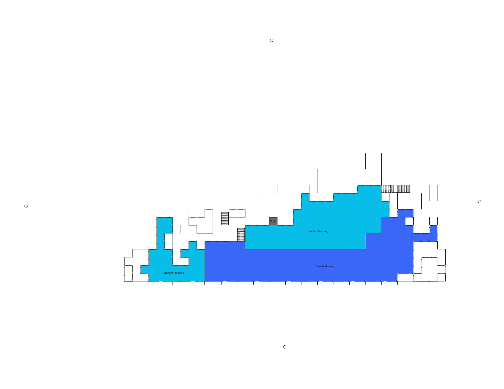
Figure 102: Floorplan - eleventh floor. To be found in Massing - Results - Floorplans - total floors. 
Figure 103: Urban plan. To be found in Massing - Results - Urban plan. 
Figure 104: Section I - Southwest to Northeast. To be found in Massing - Results - Sections. 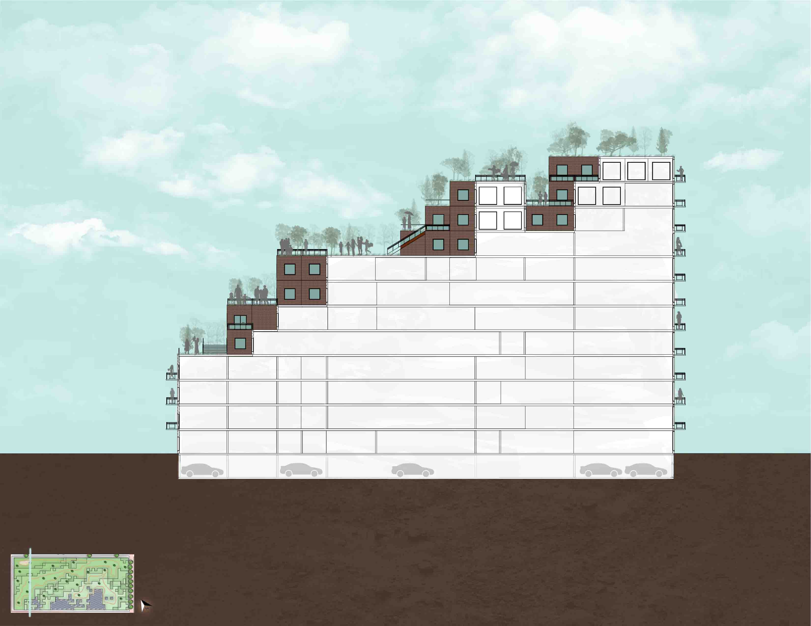
Figure 105: Section II - Northwest to the Southeast. To be found in Massing - Results - Sections. 
Figure 106: Facade North. To be found in Massing - Results - Facades. 
Figure 107: Facade East. To be found in Massing - Results - Facades. 
Figure 108: Facade South. To be found in Massing - Results - Facades. 
Figure 109: Facade West. To be found in Massing - Results - Facades. 
Renders
Figure 110: The green roof. To be found in Massing - Renders - Pre-Presentation. 
Figure 111: The view from a lovely workspace. To be found in Massing - Renders - Pre-Presentation.
Figure 112: Enjoying the view from the roof. To be found in Massing - Renders - Pre-Presentation.
Figure 113: Interesting photography in low light. To be found in Massing - Renders - Pre-Presentation.
Figure 114: A perspective view of the entire building. To be found in Massing - Renders - Pre-Presentation.
Figure 115: The outside way up. To be found in Massing - Renders - Pre-Presentation.
Figure 116: The outside way down. To be found in Massing - Renders - Pre-Presentation.
Figure 117: Enjoying a lovely view. To be found in Massing - Renders - Pre-Presentation.
Figure 118: A perspective view of the building within its context. To be found in Massing - Renders - Pre-Presentation.
Figure 119: The mazey feel of the top. To be found in Massing - Renders - Pre-Presentation.
Figure 120: View along the main street. To be found in Massing - Renders - Pre-Presentation.
Figure 121: Facade along the side street. To be found in Massing - Renders - Pre-Presentation.
Figure 122: Post presentation added open courtyard to prevent extreme mass. To be found in Massing - Renders - Post-Presentation. 
Figure 123: Open and allows improved solar access. To be found in Massing - Renders - Post-Presentation.
Figure 124: A perspective view of the open courtyard. To be found in Massing - Renders - Post-Presentation.